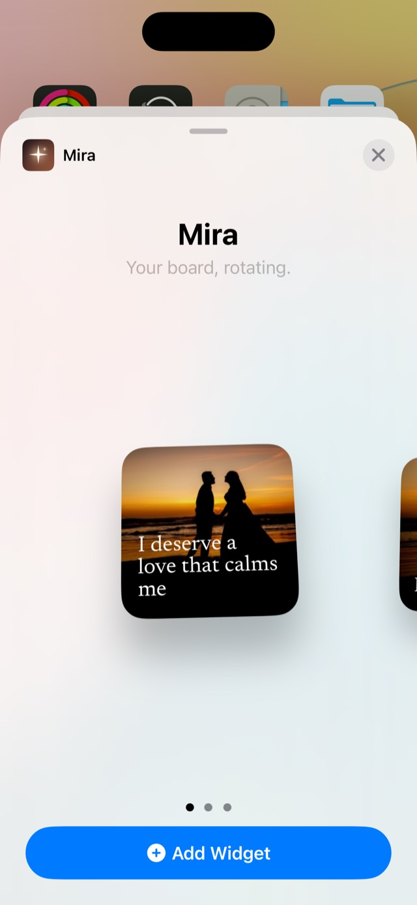
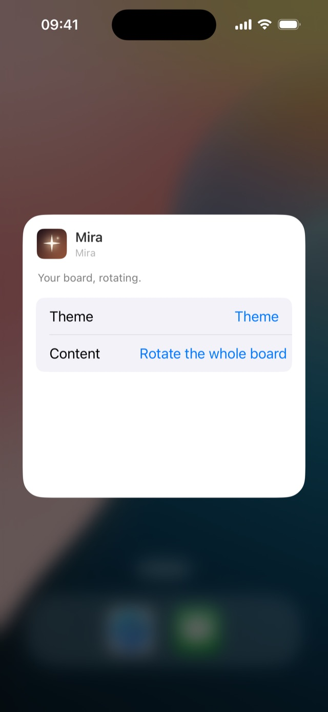

Mira · Guide
An affirmation widget for your iPhone
An affirmation you have to go looking for is one you stop reading within a week. A widget fixes that: the phrase is on the screen you already open dozens of times a day.
This guide sets one up with Mira, which pairs every phrase with a photo and changes both on its own. It takes a couple of minutes, and none of it needs an account.
Choose your phrases
Mira comes with a library of phrases across eight areas of life, and suggests one whenever you add a photo. Use those, write your own in up to 42 characters, or mix the two.
Short lines work best on a widget. If a phrase needs a second sentence to make sense, it will be hard to take in at a glance.
Add the widget to your Home Screen
Mira comes in small, medium and large. The bigger the widget, the more room the phrase has.
- Press and hold an empty area of the Home Screen until the apps jiggle.
- Tap Edit → Add Widget in the top left and search for “Mira”.
- Pick a size and drop it wherever you like. Done — it rotates on its own.

Or add it to your Lock Screen
- Wake the phone without unlocking it, then press and hold the Lock Screen.
- Tap Customise → Lock Screen, then the box under the clock.
- Search for “Mira” and pick a shape: photo and phrase, photo alone, or a line of text.
Choose how often it changes
In Mira’s settings, Rotation sets how often the widget moves on to the next card. iOS decides the exact moment a widget refreshes, so a change can arrive a few minutes late.
Found a phrase you want for the whole day? Pin it from Today and the widget holds it until midnight.
Give one widget its own look
Press and hold the widget and tap Edit Widget. Theme changes how that one widget looks, and Content lets it rotate the whole board or stay on a single photo. Two widgets can be set up differently.

Without an app: a note on your Home Screen
iOS can show a single note as a widget, and it costs nothing. Write your affirmations in one note and they sit on your Home Screen as plain text.
- Open Notes and write your phrases in a new note.
- Press and hold an empty area of the Home Screen until the apps jiggle, then tap Edit → Add Widget.
- Search for “Notes”, choose the widget that shows a single note, and add it.
- Press and hold the widget, tap Edit Widget, and pick the note you wrote.
What it can’t do: there are no photos, and it doesn’t move through your phrases on its own. You see the top of the same note until you edit it.
Keep the words where you look
The point of an affirmation widget is that you stop having to remember to read it. Set it up once and let the Home Screen do the remembering.

on your iPhone